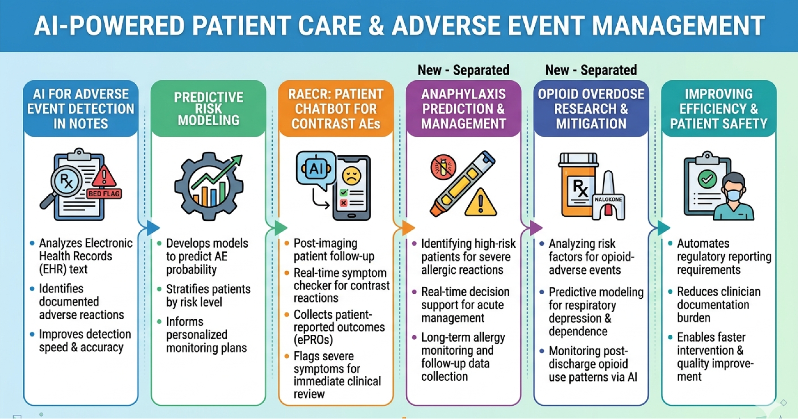
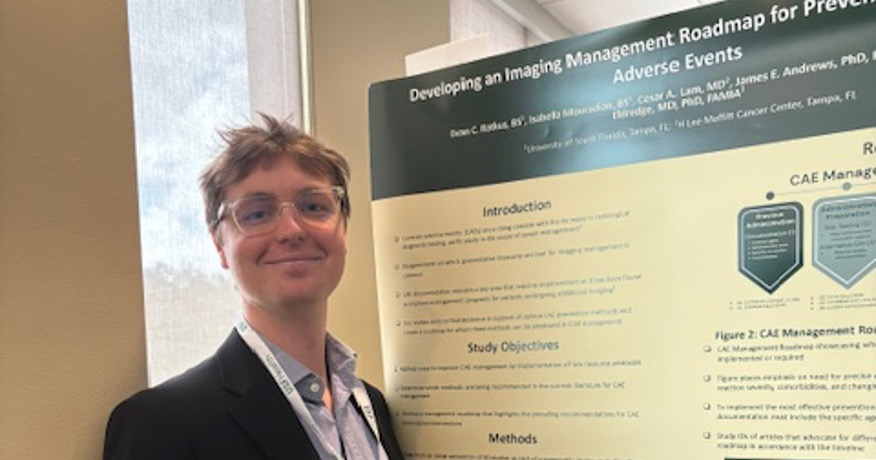
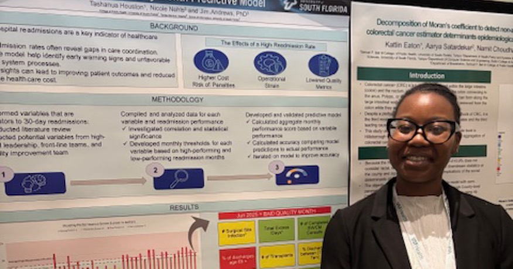
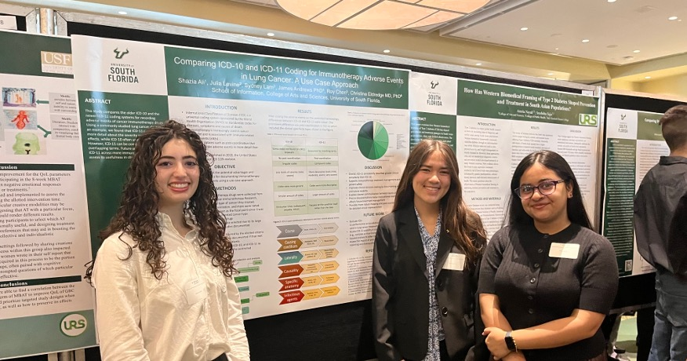

The Health Informatics Research Lab focuses on advancing research in
health data science, evidence synthesis, and biomedical information systems.
The lab integrates methodological research with applied health questions
to improve evidence-based decision making.
Research Areas
Systematic review methods
Biomedical standards and terminologies
Health data analytics
Team Members
Directors
James E. Andrews, Ph.D. (USF School of Information)
Professor of Informatics
William W. and Judith A. Gaunt Professor in Library and Information Science
Christina Eldredge, MD, Ph.D. (USF School of Information)
Director of Health Informatics Programs
email: celdredge2_at_usf.edu
Faculty
Rebecca Vandewalle, Ph.D. (Assistant Professor - School of Informaton)
Cesar Lam, MD (Moffit Cancer Center)
Students
Roy Chen (USF Med School)
Niveditha Chandrakanth (BS Student - Chemistry)
Chukwuma Okoroji (MA Student - Library and Information Science)
Shazia Ali (BS Student - Chemistry)
Julia Levine (BS Student - Chemistry
Sydney Lam (BS Student - Integrative Biology)
Tashanua Houston (BS Student - Public Health)
Jay Chandran (MS Student - Muma Coll. of Business)
Projects and Activities
Below is an infographic of some of the projects the HIRL has been working on this past year, and images from some events where our students presented.




Join the Lab
Interested students should contact with Dr. Eldredge or Dr. Andrews via email. Please include your CV and a brief
statement of research interests.